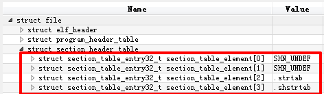
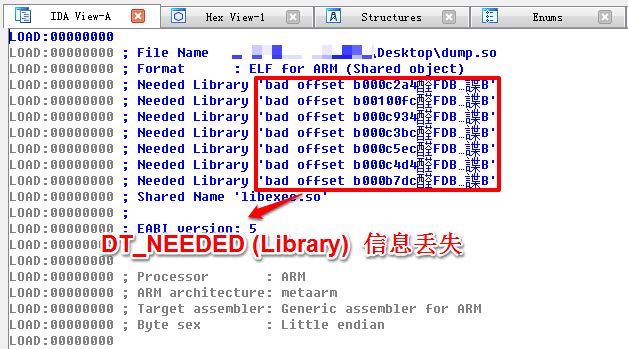
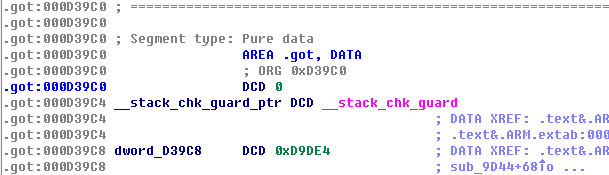

so 脱壳后的修复
加壳后ELF的section基本是被抹掉或是被写垃圾数据的, 但section对于静态分析来讲又非常重要, 所以DUMP后有必要重建section让静态分析的体验变得更好.
ELF的内存分布
因为section的部分项目只能通过编译器的一些特定规律和残留的信息来恢复,不可能百分百重建和还原. 所以必须先对编译器规划的内存布局有一个清晰的了解. 以下是一个32bit的ELF(.so)文件中在内存中的常见分布情况:
{ [0x0h]elf(.so)
{ [0x0h]PT_LOAD(0)
{ [0x0h]ehdr
} [0x33h]ehdr
{ [0x34h]PT_PHDR / phdr
} [0x133h]PT_PHDR / phdr
{ [0x134h].interp / PT_INERP
} [0x146h].interp / PT_INERP
/* gap size: 1h */
{ [0x148h].dynsym / DT_SYMTAB
} [0x607h].dynsym / DT_SYMTAB
{ [0x608h].dynstr / DT_STRTAB
} [0xbdah].dynstr / DT_STRTAB
/* gap size: 1h */
{ [0xbdch].hash / DT_HASH
} [0xe1fh].hash / DT_HASH
{ [0xe20h].rel.dyn / DT_REL
} [0xe67h].rel.dyn / DT_REL
{ [0xe68h].rel.plt / DT_JMPREL
} [0xf1fh].rel.plt / DT_JMPREL
{ [0xf20h].plt
} [0x1047h].plt
{ [0x1048h].text
} [0x2b23h].text
{ [0x2b24h].ARM.extab
} [0x2b8fh].ARM.extab
{ [0x2b90h].ARM.exidx
} [0x2cbfh].ARM.exidx
{ [0x2cc0h].rodata
} [0x2d2fh].rodata
} [0x2d2fh]PT_LOAD(0)
/* gap size: 113ch */
{ [0x3e6ch]PT_LOAD(1)
{ [0x3e6ch]PT_UNK_70000001h
{ [0x3e6ch].fini_array / DT_FINI_ARRAY
} [0x3e73h].fini_array / DT_FINI_ARRAY
{ [0x3e74h].init_array / DT_INIT_ARRAY
} [0x3e77h].init_array / DT_INIT_ARRAY
{ [0x3e78h].dynamic / PT_DYNAMIC
} [0x3f77h].dynamic / PT_DYNAMIC
{ [0x3f78h].got
{ [0x3f98h]DT_PLTGOT
} [0x3fffh]DT_PLTGOT
} [0x3fffh].got
} [0x3fffh]PT_UNK_70000001h
{ [0x4000h].data
} [0x4003h].data
} [0x4003h]PT_LOAD(1)
} [0x4003h]elf(.so)
案例分析
这里用某厂商加固中携带的so文件来试验:
section只有一个有效项.strtab:

加载so后DUMP
dump后section已经丢失:
用IDA打开后查看效果,首先依赖库信息丢失:

其次Sections信息不全:

该so外壳通过DT_INIT还原代码.
SECTION重建
在重建时尽量使用soinfo中的信息, 因为ELF中的关键信息可能被篡改和抹去.
通过PT_DYNAMIC重建
因为部分section在PT_DYNAMIC中存在副本,所以依赖PT_DYNAMIC很容易恢复出对应项.
从上面的内存分布图可以找到很多存在于PT_DYNAMIC中的section项, 有如下:
.hash / DT_HASH
.rel.dyn / DT_REL
.interp / PT_INERP
.dynsym / DT_SYMTAB
.dynstr / DT_STRTAB
.rel.plt / DT_JMPREL
.dynamic / PT_DYNAMIC
.fini_array / DT_FINI_ARRAY
.init_array / DT_INIT_ARRAY
以上这些section header都可以直接照搬PT_DYNAMIC中的offset来修复,关于size可以参照以下:
| section name | dynamic type | size |
|---|---|---|
| .hash | DT_HASH | (nbucket+nchain)*4+8 |
| .rel.dyn | DT_REL | DT_RELSZ |
| .rel.plt | DT_JMPREL | DT_PLTSZ |
| .interp | PT_INERP | strlen(ptr)+1 |
| .dynsym | DT_SYMTAB | nchain*sizeof(Elf32_Sym) |
| .dynstr | DT_STRTAB | DT_STRSZ |
| .dynamic | PT_DYNAMIC | PT_DYNAMIC->p_filesz |
| .fini_array | DT_FINI_ARRAY | DT_FINI_ARRAYSZ |
| .init_array | DT_INIT_ARRAY | DT_INIT_ARRAYSZ |
其他要点
DT_INIT_ARRAY、DT_FINI_ARRAY、DT_INIT、DT_FINI 以上四项的函数offset在load以后被填充为了base+offset,所以dump以后要减去base恢复其offset.
通过固有位置重建
通过编译器固有的上下文对section进行恢复,这种方式恢复出来的信息不一定完全准确,但不失为一种有效的重建手段.
.plt的重建
.plt位置
根据上面的内存布局图得出.plt通常紧跟.rel.plt, 并且之间没有空隙.
{ [0xe68h].rel.plt / DT_JMPREL
} [0xf1fh].rel.plt / DT_JMPREL
{ [0xf20h].plt
} [0x1047h].plt
.plt大小
.plt头部会有0x14个固定作用的数据(0x10指令+0x4偏移)
然后.plt之后存放了与.rel.plt中Elf32_Rel数量相同的代码块,每个代码块0x0Cbyte(3条arm指令).代码块负责间接调用got项中的import函数.

.got的重建
.got位置
.got项可以通过DT_REL与DT_JMPREL中的Elf32_Rel::r_offset来依次遍历得到, 通过其中的最小和最大地址来确定.got的位置和大小.
但是实际测试时针对不同的文件得到的.got位置总是存在一定误差. 如下两个例子:
第一个文件,以第一个有效项为.got的开始位置:

第二个文件,却以R_ARM_RELATIVE为开始位置,没有掌握规律:

按照以上任一的方法来确定.got,都无法兼容所有情况. 所以针对.got的位置确定, 更换一种思路: 使用前后关系来确定.got区域:
回溯上面的ELF内存分布图:
{ [0x3e78h].dynamic / PT_DYNAMIC
} [0x3f77h].dynamic / PT_DYNAMIC
{ [0x3f78h].got
{ [0x3f98h]DT_PLTGOT
} [0x3fffh]DT_PLTGOT
} [0x3fffh].got
} [0x3fffh]PT_UNK_70000001h
可得到关系: .got 起始于.dynamic, 并终于PT_UNK_700000001h. 用此方法对脱壳的so进行验证: .got确定成功.

.got大小
跟**.got位置的计算方法一样,也是通过遍历Elf32_Rel::r_offset来得到最大地址,但是由于.got位置的确定存在误差,所以.got大小**也无法保证准确,只能是侍机手工去调整.
.data的重建
.data位置
根据内存布局图推出.data通常紧跟.got的尾部,也可以认为是紧跟type==0x70000001的尾部.
} [0x3fffh].got
} [0x3fffh]PT_UNK_70000001h
{ [0x4000h].data
} [0x4003h].data
} [0x4003h]PT_LOAD(1)
.data大小
内存布局中PT_LOAD(1)的结尾即为.data的结尾,所以根据此可以确定.data的大小.
.rodata的重建
.rodata的位置
根据内存布局图推出.rodata存在于PT_LOAD(0)尾部, 紧跟.ARM.exidx.
{ [0x2b90h].ARM.exidx
} [0x2cbfh].ARM.exidx
{ [0x2cc0h].rodata
} [0x2d2fh].rodata
} [0x2d2fh]PT_LOAD(0)

.rodata的长度
长度占据了.ARM.exidx之后的全部空间
总结
根据以上的思路也可以对其他的section进行恢复.
DT_NEEDED的修复
PT_DYNAMIC下每一项type==DT_NEEDED的Elf32_Dyn::d_val存放了strtab的index, index指向的字符串为外部library(.so)文件名. 被load后Elf32_Dyn::d_val会被赋值为对应的soinfo指针.
struct soinfo {
public:
char name[SOINFO_NAME_LEN];
/*...*/
}
修复方法是通过soinfo::name从strtab中搜索字符串的index, 最后将此index重新赋值Elf32_Dyn::d_val来完成DT_NEEDED的修复.
最终效果
根据以上思路写一个简单的dump+repair的辅助脱壳工具:

最终修复完成的效果: DT_NEEDED
.plt

.got

全部section
全文完~
参考资料
《Executable and Linkable Format (ELF)》 AOSP/bionic/linker